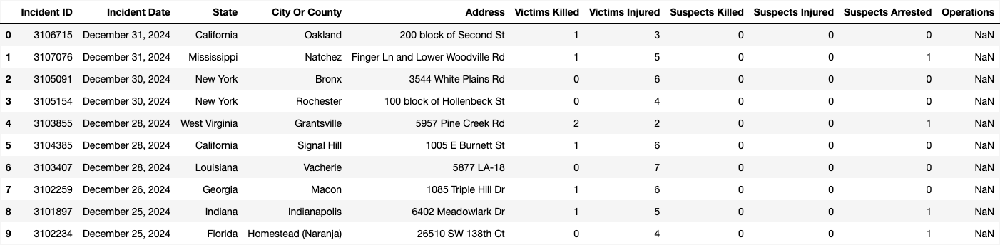
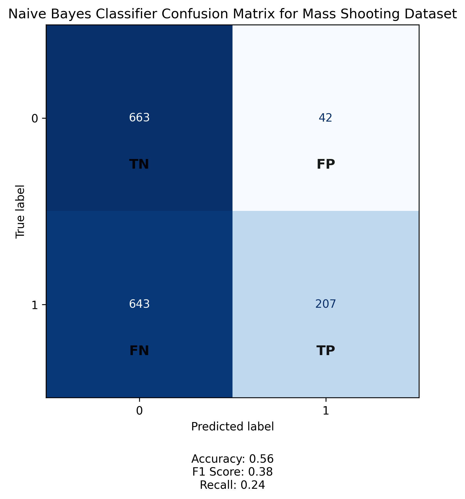

Mass Shootings
Sample Data
 Click here to view the full sample dataset.Training Data

Testing Data

Confusion Matrix
Conclusions
From the confusion matrix and performance metrics of the Naive Bayes Classifier applied to the mass shooting dataset, we can see that the model struggles to accurately identify positive cases. While it correctly classifies a moderate number of true positives (207), it also produces a high number of false negatives (643), meaning many actual incidents are missed by the model. This is reflected in the low recall score of 0.24, indicating that only 24% of actual positive cases are correctly identified.
The overall accuracy of 56% suggests that the model performs only slightly better than random guessing, and the F1 score of 0.38 highlights a weak balance between precision and recall. The relatively high number of false positives (42) also shows that the model incorrectly flags non-events as incidents, which could lead to unnecessary concern or resource allocation.
These results imply that while the Naive Bayes approach may offer some predictive value, it is not reliable enough for high-stakes decision-making in its current form. Improving its performance would likely require more balanced data, feature engineering, or alternative modeling techniques better suited to the complexity of mass shooting prediction.